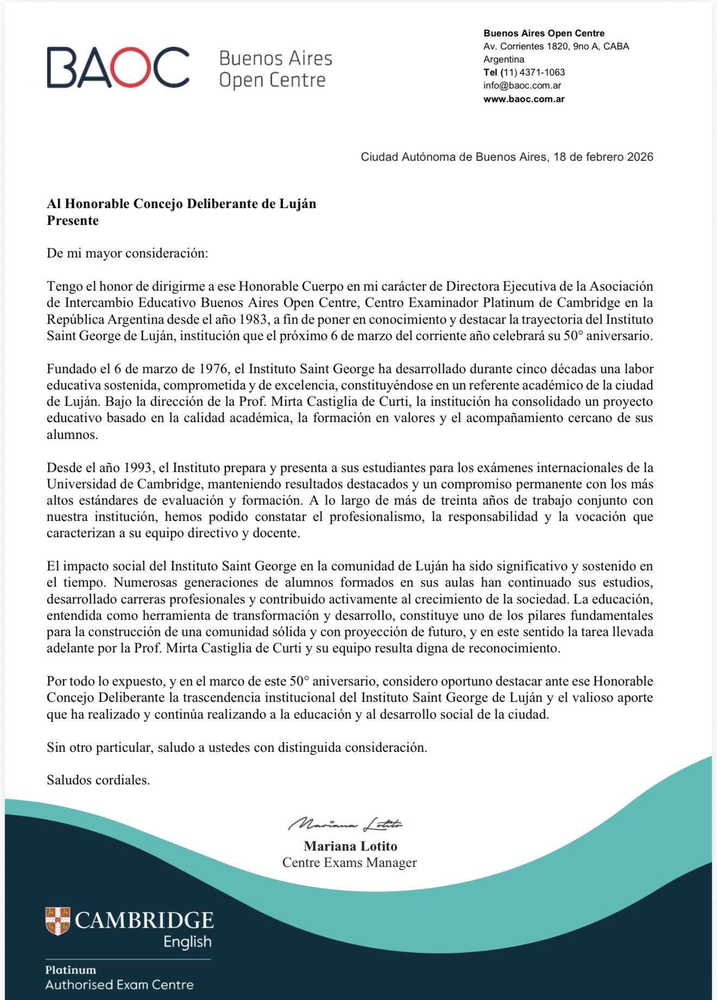
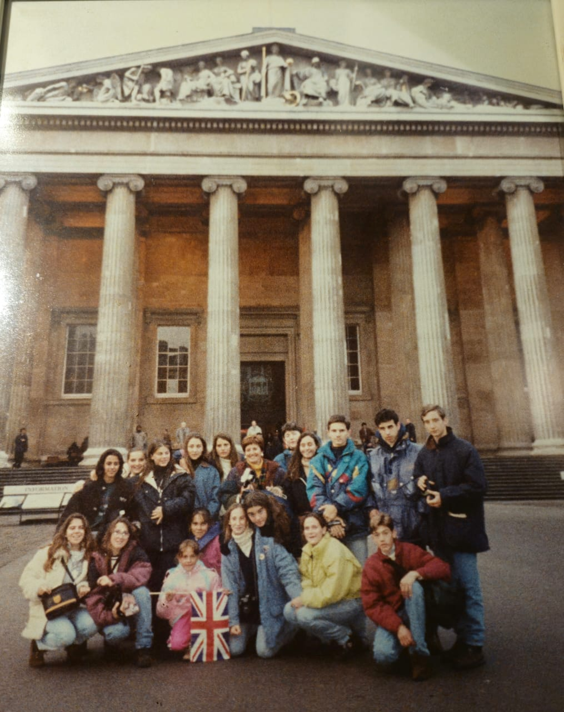
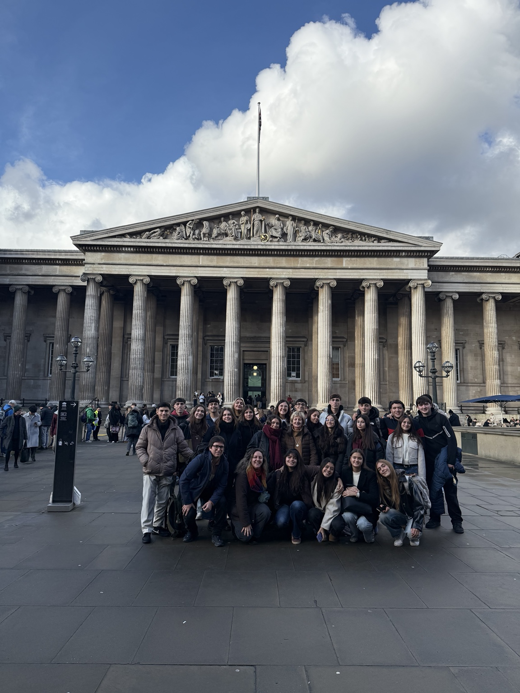

1976–2026 • 50 años de historia
50 años educando con propósito.
El 6 de marzo de 1976 nació un sueño en la ciudad de Luján. Con vocación, compromiso y una profunda convicción en el poder transformador de la educación, la Prof. Mirta Castiglia abrió las puertas del Instituto Saint George con un pequeño grupo de alumnos. Lo que comenzó como un proyecto familiar se convirtió, con el paso del tiempo, en una institución referente en la enseñanza del idioma inglés.
VESTIGIA NULLA RETRORSUM
No dejar huellas hacia atrás.
Avanzar siempre. Construir futuro. Educar con propósito. Esta web reúne hitos, fotos y recuerdos para preservar la memoria institucional desde 1976 hasta hoy.
Historia
De la calle Alem a la sede de Alsina: cinco décadas de continuidad, crecimiento y comunidad.
Un inicio pequeño, un legado enorme
Lo que comenzó en marzo de 1976 con un grupo inicial de alumnos —mayormente vecinos y familiares— fue creciendo con constancia. Cada etapa (Alem, San Martín, Mariano Moreno) marcó un paso más en la construcción de una institución sólida, cercana y comprometida con la calidad.
En febrero de 1989, el Instituto se instala en su sede actual de calle Alsina, consolidando una base para seguir expandiendo su propuesta académica.
Nuestra historia en datos
- 4 sedes (Alem → San Martín → Mariano Moreno → Alsina).
- ~300 alumnos en la actualidad.
- Equipo docente: 6 presenciales + 1 remoto (aprox.).
- Exámenes internacionales: hito desde 1997.
- Viajes educativos al Reino Unido: 1994, 1997, 2000, 2006, 2011, 2014, 2017, 2026.
50 años
Celebrar este aniversario es reconocer la perseverancia y vocación de su fundadora y equipo, y también el impacto educativo y cultural que el Instituto Saint George ha tenido en Luján.
Línea de tiempo (1976–Hoy)
Buscá por año o explorá los hitos más importantes.
Para editar los hitos, abrí timeline.json.
Reconocimiento institucional
En el marco del 50° aniversario, el Buenos Aires Open Centre (Cambridge Platinum Centre) destacó formalmente la trayectoria del Instituto Saint George y su aporte educativo a la comunidad de Luján.
Febrero 2026
- Trayectoria sostenida desde 1976.
- Más de 30 años de preparación para exámenes internacionales.
- Impacto educativo y social en la comunidad.

Viajes de estudio al Reino Unido
Aprender un idioma también es abrir puertas al mundo.
Enero 1994 — Primer viaje
Foto: British Museum.

Enero 2026 — Último viaje
Foto: British Museum.

Saludos de exalumnos — 50 años
Mensajes enviados por nuestra comunidad en el marco del 50° aniversario.
Cecilia Cartier
Celeste Devechi
Daniele Casartelli
Lucia Casartelli
Marcelo Caminos
María José Álvarez Mitre
Mariana Lotito
Melina Petinatto
Nico Zago
Vicky Tinghitella
Galería
Espacios listos para que vayas subiendo fotos cuando quieras.
Actos • Clases • Aulas
Sede Alsina • Exterior / Interior
Mochilas • Evolución
Equipo docente • Historia
Egresados • Promociones
Cambridge • Certificaciones
Contacto
Contacto directo por WhatsApp.
Aportes para la historia
Para sumar fotos, testimonios o documentos históricos, organizalos por año y subilos.
- Fotos históricas
- Testimonios (1–3 líneas)
- Fechas / hitos
- Recortes / diplomas / certificados